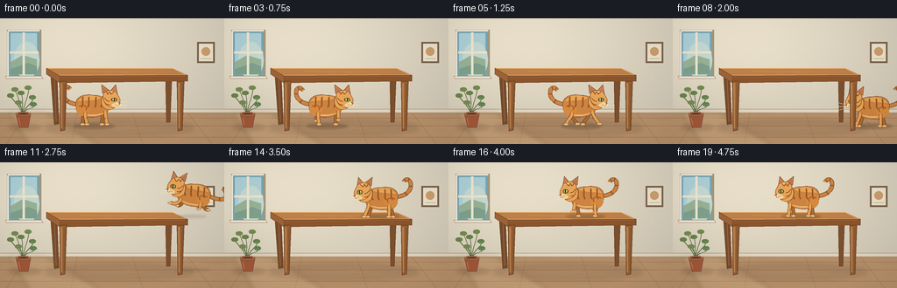
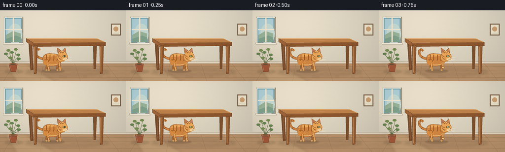

CODING AGENTS AS PIXEL WORLD MODELS
traex/GPT-6.1-Sol · dynamic_spatial_relationship_0014
点击播放 · 原生 RGB 像素
逐轮保存的候选
回放视频、检查图与代码变化。
每份候选均可单独播放。实际图片检查记录在下方工具轨迹中。
候选 01播放与检查图
点击播放 · 原生 RGB 像素


展开代码变化
--- 上一保存版本
+++ 本次保存版本
@@ -0,0 +1,215 @@
+from pathlib import Path
+import math
+import numpy as np
+from PIL import Image, ImageDraw, ImageFilter
+import artifact_io
+
+W,H,S=256,144,4
+SIZE=(W*S,H*S)
+
+def bez(points, steps=16):
+ # Cubic Bézier chain: first point, then control/control/end triples.
+ out=[points[0]]
+ p0=points[0]
+ for i in range(1,len(points),3):
+ p1,p2,p3=points[i:i+3]
+ for j in range(1,steps+1):
+ t=j/steps; u=1-t
+ out.append((u**3*p0[0]+3*u*u*t*p1[0]+3*u*t*t*p2[0]+t**3*p3[0],u**3*p0[1]+3*u*u*t*p1[1]+3*u*t*t*p2[1]+t**3*p3[1]))
+ p0=p3
+ return out
+
+class Pen:
+ def __init__(self,img,tf=None): self.img=img; self.d=ImageDraw.Draw(img); self.tf=tf or (lambda p:p)
+ def pts(self,pts): return [(self.tf(p)[0]*S,self.tf(p)[1]*S) for p in pts]
+ def poly(self,pts,fill,outline=None,width=.4):
+ pp=self.pts(pts); self.d.polygon(pp,fill=fill)
+ if outline:self.d.line(pp+[pp[0]],fill=outline,width=max(1,round(width*S)),joint='curve')
+ def line(self,pts,fill,width=1): self.d.line(self.pts(pts),fill=fill,width=max(1,round(width*S)),joint='curve')
+ def curve(self,pts,fill,width=1): self.line(bez(pts),fill,width)
+ def ellipse(self,box,fill,outline=None,width=.4):
+ a,b,c,d=box
+ pp=[((a+c)/2+(c-a)/2*math.cos(t),(b+d)/2+(d-b)/2*math.sin(t)) for t in np.linspace(0,2*math.pi,60)]
+ self.poly(pp,fill,outline,width)
+ def shape(self,pts,fill,outline=None,width=.4): self.poly(bez(pts),fill,outline,width)
+
+rng=np.random.default_rng(23)
+y,x=np.mgrid[0:H*S,0:W*S].astype(float); x/=S;y/=S
+# Warm, softly textured plaster, with a cooler shaded corner.
+light=np.exp(-((x-44)**2/22000+(y-28)**2/7200))
+base=np.empty((H*S,W*S,3))
+for ch,v in enumerate([219,211,192]):base[:,:,ch]=v+light*[21,19,16][ch]-y*.09
+base+=rng.normal(0,.45,(H*S,W*S,1))
+bg=Image.fromarray(np.clip(base,0,255).astype('uint8'),'RGB')
+p=Pen(bg)
+# Skirting and honey-colored floor.
+p.poly([(0,105),(256,105),(256,144),(0,144)],(184,145,107))
+p.poly([(0,104),(256,104),(256,108),(0,108)],(226,213,191))
+p.line([(0,104),(256,104)],(179,164,141),.65)
+p.line([(0,108),(256,108)],(153,123,92),.6)
+for yy in [114,123,136]:p.line([(0,yy),(256,yy)],(156,119,85),.5)
+for xa,ya,xb,yb in [(30,108,7,144),(88,108,81,144),(151,108,163,144),(214,108,242,144)]:p.line([(xa,ya),(xb,yb)],(161,124,88),.5)
+for i in range(90):
+ xx=rng.uniform(0,256); yy=rng.uniform(109,144)
+ p.curve([(xx,yy),(xx+2,yy-.25),(xx+6,yy+.25),(xx+10,yy)],(179,138,98),.23)
+# Diffused sunlight across the floor.
+sun=Image.new('RGBA',SIZE);sp=Pen(sun)
+sp.poly([(9,107),(51,107),(112,144),(33,144)],(255,232,175,36))
+sun=sun.filter(ImageFilter.GaussianBlur(2.8*S));bg=Image.alpha_composite(bg.convert('RGBA'),sun).convert('RGB');p=Pen(bg)
+# Window recess and sky, designed to leave the action unobstructed.
+p.poly([(8,13),(47,13),(47,69),(8,69)],(163,153,130))
+p.poly([(10,15),(44,15),(44,65),(10,65)],(123,170,182))
+p.poly([(12,17),(42,17),(42,63),(12,63)],(177,211,218))
+p.ellipse((16,27,45,69),(200,221,213))
+p.poly([(12,50),(26,42),(42,47),(42,63),(12,63)],(154,181,154))
+p.poly([(12,58),(32,51),(42,55),(42,64),(12,64)],(129,163,140))
+p.line([(27,16),(27,65)],(242,233,211),2.7)
+p.line([(11,39),(44,39)],(242,233,211),2.2)
+p.poly([(6,66),(47,66),(49,69),(7,69)],(241,233,215),(154,143,122),.5)
+p.line([(9,14),(45,14)],(249,241,224),1.8)
+p.line([(9,15),(9,66)],(249,241,224),1.8)
+# Small wall picture: restrained background detail.
+p.poly([(225,27),(245,27),(245,51),(225,51)],(123,99,76))
+p.poly([(227,29),(243,29),(243,49),(227,49)],(239,228,205))
+p.ellipse((230,33,240,43),(204,160,112))
+p.line([(229,46),(241,46)],(155,161,133),.6)
+# Pot and leaves at left.
+shadow=Image.new('RGBA',SIZE);q=Pen(shadow);q.ellipse((9,121,47,129),(60,43,26,40));bg=Image.alpha_composite(bg.convert('RGBA'),shadow.filter(ImageFilter.GaussianBlur(2*S))).convert('RGB');p=Pen(bg)
+for i,(tx,ty) in enumerate([(12,89),(17,82),(24,86),(32,80),(37,91),(21,97),(38,99)]):
+ p.curve([(26,114),(25,101),(tx+3,ty+6),(tx,ty)],(86,107,65),.8)
+ p.ellipse((tx-4,ty-3,tx+4,ty+2),(101+(i%2)*13,130+(i%2)*9,79))
+ p.line([(tx-2,ty),(tx+2,ty-.4)],(142,157,99),.35)
+p.poly([(18,109),(35,109),(32,125),(22,125)],(162,87,56),(123,68,45),.5)
+p.ellipse((18,107,35,112),(195,118,78),(137,77,49),.5)
+p.ellipse((20,108.4,33,110.5),(79,66,44))
+p.line([(21,114),(23,122)],(204,132,88),.7)
+
+# Furniture: all geometry is hand drawn, not rendered by an external engine.
+def table_shadow(img):
+ z=Image.new('RGBA',SIZE);r=Pen(z)
+ r.ellipse((50,116,222,135),(55,37,23,44));r.ellipse((62,121,215,131),(49,32,20,20))
+ return Image.alpha_composite(img.convert('RGBA'),z.filter(ImageFilter.GaussianBlur(3*S))).convert('RGB')
+bg=table_shadow(bg)
+p=Pen(bg)
+# Far legs.
+p.poly([(58,66),(65,66),(67,121),(62,122)],(120,76,44),(100,66,39),.6)
+p.poly([(189,65),(196,65),(194,119),(190,119)],(126,80,45),(100,64,36),.6)
+p.line([(62,70),(64,118)],(161,108,66),.7)
+# Top slab; a broad empty surface makes the relation easy to see.
+p.poly([(53,57),(197,57),(214,65),(68,66)],(193,132,77),(122,77,43),.6)
+p.poly([(68,66),(214,65),(214,72),(68,74)],(140,86,46),(107,64,35),.5)
+p.poly([(53,57),(68,66),(68,74),(53,64)],(158,100,57),(113,70,39),.5)
+p.line([(54,57.4),(197,57.4),(212,64.6),(68,65.4)],(230,175,111),.85)
+for yy in [59.0,61.5,63.4]:
+ p.curve([(59+(yy-59)*1.5,yy),(105,yy-.4),(163,yy+.4),(199+(yy-59)*1.5,yy)],(173,111,61),.28)
+p.curve([(90,61),(106,59),(130,63),(160,61)],(213,151,88),.35)
+p.line([(69,67),(211,66)],(186,121,65),.6)
+
+def front_legs(img):
+ r=Pen(img)
+ for xx in [68,202]:
+ r.poly([(xx,72),(xx+8,72),(xx+6,128),(xx+1,129)],(148,94,52),(110,67,37),.65)
+ r.poly([(xx+1,74),(xx+3.4,74),(xx+3,126),(xx+1.5,126)],(185,125,73))
+ r.line([(xx+6,75),(xx+5,124)],(118,73,40),.5)
+ return img
+
+# Cat, modeled as curved, shaded illustration with articulated legs.
+# Transform applies facing and a small jump pitch to the same coherent cat.
+def cat(img,cx,cy,face=1,phase=0,mode='stand',angle=0,frame=0):
+ ca,sa=math.cos(angle),math.sin(angle)
+ def tf(v):
+ vx,vy=v;vx*=face
+ return (cx+ca*vx-sa*vy,cy+sa*vx+ca*vy)
+ r=Pen(img,tf)
+ dark=(111,62,32);fur=(207,133,65);lite=(233,166,88);stripe=(154,89,40)
+ # Curved upright tail, always attached at the rump.
+ wag=2*math.sin(frame*.45)
+ tail=[(-17,-9),(-26,-10),(-35,-14),(-35,-23),(-35,-30),(-29,-31+wag),(-27,-27+wag)]
+ if mode=='jump':tail=[(-17,-9),(-27,-6),(-38,-4),(-38,-12),(-38,-16),(-34,-19),(-33,-19)]
+ r.curve(tail,dark,4.7);r.curve(tail,fur,3.8)
+ tt=bez(tail)
+ for k in [8,15,23,29]:
+ if k<len(tt)-1:
+ a=tt[k];b=tt[k+1];dx=b[0]-a[0];dy=b[1]-a[1];ll=math.hypot(dx,dy);nx=-dy/ll;ny=dx/ll
+ r.line([(a[0]-nx*1.6,a[1]-ny*1.6),(a[0]+nx*1.6,a[1]+ny*1.6)],stripe,1.4)
+ # Legs run alternately. Smooth knee/hock curves retain an animal silhouette.
+ def limb(root,knee,foot,col):
+ r.curve([root,(root[0],root[1]+4),knee,foot],dark,4.0)
+ r.curve([root,(root[0],root[1]+4),knee,foot],col,3.0)
+ r.ellipse((foot[0]-2.3,foot[1]-1.0,foot[0]+3.0,foot[1]+1.8),(238,192,125),dark,.35)
+ r.line([(foot[0]+.7,foot[1]+.5),(foot[0]+.8,foot[1]+1.4)],stripe,.3)
+ if mode=='run':
+ a=math.sin(phase);b=math.cos(phase)
+ feet=[(-12-8*a,13-4*max(0,b)),(10+8*a,13-5*max(0,-b)),(-9+8*a,13-4*max(0,-b)),(13-8*a,13-5*max(0,b))]
+ elif mode=='jump':feet=[(-20,7),(16,6),(-9,7),(24,4)]
+ elif mode=='crouch':feet=[(-15,13),(14,13),(-10,13),(18,13)]
+ else:feet=[(-13,13),(9,13),(-8,13),(15,13)]
+ for root,ft in zip([(-12,-1),(10,-1)],feet[:2]):limb(root,((root[0]+ft[0])/2,8),ft,(173,106,49))
+ # Rounded torso, pale underside and warm highlight.
+ body=bez([(-20,-6),(-23,-16),(-13,-23),(0,-20),(10,-20),(15,-16),(17,-9),(20,1),(7,7),(-8,5),(-15,5),(-20,2),(-20,-6)])
+ r.poly(body,fur,dark,.6)
+ r.shape([(-18,-13),(-13,-21),(-2,-21),(9,-17),(4,-14),(-8,-14),(-18,-13)],lite)
+ r.shape([(-14,1),(-6,6),(9,4),(14,-1),(8,2),(-3,4),(-14,1)],(238,186,116))
+ r.ellipse((-20,-12,-5,4),(215,139,65))
+ # Ribs and haunch tabby markings.
+ for xx in [-12,-5,3,10]:
+ r.curve([(xx,-18),(xx-2,-13),(xx+1,-10),(xx-2,-6)],stripe,1.8)
+ r.curve([(-17,-7),(-12,-10),(-6,-7),(-9,-3)],(168,95,41),1.35)
+ for root,ft in zip([(-10,0),(13,-2)],feet[2:]):limb(root,((root[0]+ft[0])/2,7),ft,lite)
+ for xx in [-8,13]:r.line([(xx-1,6),(xx+1,6.5)],stripe,1.1)
+ # Neck and head, pointed ears distinct from the round face.
+ r.shape([(10,-7),(7,-15),(10,-21),(16,-23),(24,-21),(29,-15),(26,-8),(22,-2),(15,-2),(10,-7)],lite,dark,.55)
+ r.poly([(10,-22),(9,-32),(17,-26)],fur,dark,.6)
+ r.poly([(19,-25),(25,-32),(27,-20)],fur,dark,.6)
+ r.poly([(11,-24),(10.6,-29),(15,-25.5)],(187,116,95))
+ r.poly([(21,-25),(24.5,-29),(25.4,-23)],(198,127,102))
+ r.shape([(11,-21),(14,-28),(25,-27),(28,-19),(32,-14),(29,-8),(23,-6),(16,-5),(10,-11),(11,-21)],lite,dark,.55)
+ r.shape([(14,-22),(18,-26),(24,-25),(26,-22),(20,-24),(18,-20),(14,-22)],(244,184,108))
+ # Forehead M and cheeks.
+ r.line([(14,-24),(16,-21),(18,-24),(20,-21),(23,-24)],stripe,1.1)
+ r.curve([(12,-17),(14,-15),(15,-13),(18,-13)],stripe,1.0)
+ r.curve([(12,-12),(14,-10),(15,-9),(18,-9)],stripe,.9)
+ r.ellipse((20,-16.8,26.4,-12.7),(91,76,39),dark,.45)
+ r.ellipse((21.1,-16.2,25.6,-13.1),(161,186,98))
+ r.ellipse((23,-16.3,24,-13),(34,36,24))
+ r.ellipse((21.7,-15.8,22.6,-15),(253,251,220))
+ # Pale muzzle pads, chin, pink triangular nose.
+ r.ellipse((23,-11.9,31,-6.6),(249,216,161))
+ r.ellipse((20.5,-10.7,28,-6),(245,209,151))
+ r.poly([(28,-12),(31.2,-11.2),(29,-9.5)],(136,77,66),dark,.3)
+ r.line([(29,-9.5),(28.7,-8),(26,-7.6)],dark,.45)
+ for sx,sy in [(24,-9),(25.5,-10),(26,-8.7)]:r.ellipse((sx,sy,sx+.55,sy+.5),dark)
+ for yy,dy in [(-10,-3),(-8.7,0),(-7.5,3)]:
+ r.curve([(25,yy),(29,yy+dy*.25),(34,yy+dy*.7),(38,yy+dy)],(245,231,197),.4)
+ return img
+
+# Five-second action: anticipation, run out from beneath, spring back onto top,
+# landing and a short confident trot. No cuts or moving camera.
+poses=[(107,108,1,'stand',0),(108,108,1,'stand',0),(111,108,1,'stand',0),(117,108,1,'run',0),
+ (131,108,1,'run',0),(151,108,1,'run',0),(174,108,1,'run',0),(199,108,1,'run',0),
+ (227,110,-1,'crouch',0),(234,91,-1,'jump',.32),(230,67,-1,'jump',.25),
+ (219,45,-1,'jump',.12),(204,38,-1,'jump',-.05),(189,43,-1,'jump',-.12),
+ (178,49,-1,'crouch',0),(169,48,-1,'run',0),(157,48,-1,'run',0),
+ (148,48,-1,'stand',0),(147,48,-1,'stand',0),(147,48,-1,'stand',0)]
+frames=[]
+for i,(cx,cy,face,mode,angle) in enumerate(poses):
+ im=bg.copy()
+ sh=Image.new('RGBA',SIZE);r=Pen(sh)
+ if i<9:
+ r.ellipse((cx-23,120,cx+24,127),(52,34,21,58))
+ elif i<14:
+ r.ellipse((min(cx,232)-20,121,min(cx,232)+21,126),(52,34,21,20))
+ if i>=11:r.ellipse((cx-16,60,cx+17,64),(67,40,22,35))
+ else:r.ellipse((cx-23,59.5,cx+22,64.5),(72,42,23,65))
+ im=Image.alpha_composite(im.convert('RGBA'),sh.filter(ImageFilter.GaussianBlur(1.1*S))).convert('RGB')
+ if i>=9:im=front_legs(im)
+ im=cat(im,cx,cy,face,phase=(i-3)*2.4,mode=mode,angle=angle,frame=i)
+ if i<9:im=front_legs(im)
+ # Subtle vignette and supersampled downsampling for clean film-like edges.
+ arr=np.asarray(im).astype(np.float32)
+ vign=1-.06*((x-128)**2/18000+(y-72)**2/13000)
+ arr*=np.clip(vign,.89,1)[:,:,None]
+ im=Image.fromarray(np.clip(arr,0,255).astype(np.uint8)).resize((W,H),Image.Resampling.LANCZOS)
+ frames.append(np.asarray(im))
+artifact_io.save(np.stack(frames),Path(__file__).resolve().parent)
+print('Saved',len(frames),'RGB frames at',W,'x',H)
可观测工具轨迹
实际执行的命令与返回图片。
命令 1exit 0
/bin/bash -lc "ls -la && cat prompt.txt && printf '\\n---RULES---\\n' && cat GENERATION_RULES.md && printf '\\n---SPEC---\\n' && cat task_spec.json"
命令 2exit 0
/bin/bash -lc "cat artifact_io.py && python - <<'PY'
import PIL, numpy
print('PIL',PIL.__version__)
PY"命令 3exit 0
/bin/bash -lc "cat > generate.py <<'PY'
from pathlib import Path
import math
import numpy as np
from PIL import Image, ImageDraw, ImageFilter
import artifact_io
W,H,S=256,144,4
SIZE=(W*S,H*S)
def bez(points, steps=16):
# Cubic Bézier chain: first point, then control/control/end triples.
out=[points[0]]
p0=points[0]
for i in range(1,len(points),3):
p1,p2,p3=points[i:i+3]
for j in range(1,steps+1):
t=j/steps; u=1-t
out.append((u**3*p0[0]+3*u*u*t*p1[0]+3*u*t*t*p2[0]+t**3*p3[0],u**3*p0[1]+3*u*u*t*p1[1]+3*u*t*t*p2[1]+t**3*p3[1]))
p0=p3
return out
class Pen:
def __init__(self,img,tf=None): self.img=img; self.d=ImageDraw.Draw(img); self.tf=tf or (lambda p:p)
def pts(self,pts): return [(self.tf(p)[0]*S,self.tf(p)[1]*S) for p in pts]
def poly(self,pts,fill,outline=None,width=.4):
pp=self.pts(pts); self.d.polygon(pp,fill=fill)
if outline:self.d.line(pp+[pp[0]],fill=outline,width=max(1,round(width*S)),joint='curve')
def line(self,pts,fill,width=1): self.d.line(self.pts(pts),fill=fill,width=max(1,round(width*S)),joint='curve')
def curve(self,pts,fill,width=1): self.line(bez(pts),fill,width)
def ellipse(self,box,fill,outline=None,width=.4):
a,b,c,d=box
pp=[((a+c)/2+(c-a)/2*math.cos(t),(b+d)/2+(d-b)/2*math.sin(t)) for t in np.linspace(0,2*math.pi,60)]
self.poly(pp,fill,outline,width)
def shape(self,pts,fill,outline=None,width=.4): self.poly(bez(pts),fill,outline,width)
rng=np.random.default_rng(23)
y,x=np.mgrid[0:H*S,0:W*S].astype(float); x/=S;y/=S
# Warm, softly textured plaster, with a cooler shaded corner.
light=np.exp(-((x-44)**2/22000+(y-28)**2/7200))
base=np.empty((H*S,W*S,3))
for ch,v in enumerate([219,211,192]):base[:,:,ch]=v+light*[21,19,16][ch]-y*.09
base+=rng.normal(0,.45,(H*S,W*S,1))
bg=Image.fromarray(np.clip(base,0,255).astype('uint8'),'RGB')
p=Pen(bg)
# Skirting and honey-colored floor.
p.poly([(0,105),(256,105),(256,144),(0,144)],(184,145,107))
p.poly([(0,104),(256,104),(256,108),(0,108)],(226,213,191))
p.line([(0,104),(256,104)],(179,164,141),.65)
p.line([(0,108),(256,108)],(153,123,92),.6)
for yy in [114,123,136]:p.line([(0,yy),(256,yy)],(156,119,85),.5)
for xa,ya,xb,yb in [(30,108,7,144),(88,108,81,144),(151,108,163,144),(214,108,242,144)]:p.line([(xa,ya),(xb,yb)],(161,124,88),.5)
for i in range(90):
xx=rng.uniform(0,256); yy=rng.uniform(109,144)
p.curve([(xx,yy),(xx+2,yy-.25),(xx+6,yy+.25),(xx+10,yy)],(179,138,98),.23)
# Diffused sunlight across the floor.
sun=Image.new('RGBA',SIZE);sp=Pen(sun)
sp.poly([(9,107),(51,107),(112,144),(33,144)],(255,232,175,36))
sun=sun.filter(ImageFilter.GaussianBlur(2.8*S));bg=Image.alpha_composite(bg.convert('RGBA'),sun).convert('RGB');p=Pen(bg)
# Window recess and sky, designed to leave the action unobstructed.
p.poly([(8,13),(47,13),(47,69),(8,69)],(163,153,130))
p.poly([(10,15),(44,15),(44,65),(10,65)],(123,170,182))
p.poly([(12,17),(42,17),(42,63),(12,63)],(177,211,218))
p.ellipse((16,27,45,69),(200,221,213))
p.poly([(12,50),(26,42),(42,47),(42,63),(12,63)],(154,181,154))
p.poly([(12,58),(32,51),(42,55),(42,64),(12,64)],(129,163,140))
p.line([(27,16),(27,65)],(242,233,211),2.7)
p.line([(11,39),(44,39)],(242,233,211),2.2)
p.poly([(6,66),(47,66),(49,69),(7,69)],(241,233,215),(154,143,122),.5)
p.line([(9,14),(45,14)],(249,241,224),1.8)
p.line([(9,15),(9,66)],(249,241,224),1.8)
# Small wall picture: restrained background detail.
p.poly([(225,27),(245,27),(245,51),(225,51)],(123,99,76))
p.poly([(227,29),(243,29),(243,49),(227,49)],(239,228,205))
p.ellipse((230,33,240,43),(204,160,112))
p.line([(229,46),(241,46)],(155,161,133),.6)
# Pot and leaves at left.
shadow=Image.new('RGBA',SIZE);q=Pen(shadow);q.ellipse((9,121,47,129),(60,43,26,40));bg=Image.alpha_composite(bg.convert('RGBA'),shadow.filter(ImageFilter.GaussianBlur(2*S))).convert('RGB');p=Pen(bg)
for i,(tx,ty) in enumerate([(12,89),(17,82),(24,86),(32,80),(37,91),(21,97),(38,99)]):
p.curve([(26,114),(25,101),(tx+3,ty+6),(tx,ty)],(86,107,65),.8)
p.ellipse((tx-4,ty-3,tx+4,ty+2),(101+(i%2)*13,130+(i%2)*9,79))
p.line([(tx-2,ty),(tx+2,ty-.4)],(142,157,99),.35)
p.poly([(18,109),(35,109),(32,125),(22,125)],(162,87,56),(123,68,45),.5)
p.ellipse((18,107,35,112),(195,118,78),(137,77,49),.5)
p.ellipse((20,108.4,33,110.5),(79,66,44))
p.line([(21,114),(23,122)],(204,132,88),.7)
# Furniture: all geometry is hand drawn, not rendered by an external engine.
def table_shadow(img):
z=Image.new('RGBA',SIZE);r=Pen(z)
r.ellipse((50,116,222,135),(55,37,23,44));r.ellipse((62,121,215,131),(49,32,20,20))
return Image.alpha_composite(img.convert('RGBA'),z.filter(ImageFilter.GaussianBlur(3*S))).convert('RGB')
bg=table_shadow(bg)
p=Pen(bg)
# Far legs.
p.poly([(58,66),(65,66),(67,121),(62,122)],(120,76,44),(100,66,39),.6)
p.poly([(189,65),(196,65),(194,119),(190,119)],(126,80,45),(100,64,36),.6)
p.line([(62,70),(64,118)],(161,108,66),.7)
# Top slab; a broad empty surface makes the relation easy to see.
p.poly([(53,57),(197,57),(214,65),(68,66)],(193,132,77),(122,77,43),.6)
p.poly([(68,66),(214,65),(214,72),(68,74)],(140,86,46),(107,64,35),.5)
p.poly([(53,57),(68,66),(68,74),(53,64)],(158,100,57),(113,70,39),.5)
p.line([(54,57.4),(197,57.4),(212,64.6),(68,65.4)],(230,175,111),.85)
for yy in [59.0,61.5,63.4]:
p.curve([(59+(yy-59)*1.5,yy),(105,yy-.4),(163,yy+.4),(199+(yy-59)*1.5,yy)],(173,111,61),.28)
p.curve([(90,61),(106,59),(130,63),(160,61)],(213,151,88),.35)
p.line([(69,67),(211,66)],(186,121,65),.6)
def front_legs(img):
r=Pen(img)
for xx in [68,202]:
r.poly([(xx,72),(xx+8,72),(xx+6,128),(xx+1,129)],(148,94,52),(110,67,37),.65)
r.poly([(xx+1,74),(xx+3.4,74),(xx+3,126),(xx+1.5,126)],(185,125,73))
r.line([(xx+6,75),(xx+5,124)],(118,73,40),.5)
return img
# Cat, modeled as curved, shaded illustration with articulated legs.
# Transform applies facing and a small jump pitch to the same coherent cat.
def cat(img,cx,cy,face=1,phase=0,mode='stand',angle=0,frame=0):
ca,sa=math.cos(angle),math.sin(angle)
def tf(v):
vx,vy=v;vx*=face
return (cx+ca*vx-sa*vy,cy+sa*vx+ca*vy)
r=Pen(img,tf)
dark=(111,62,32);fur=(207,133,65);lite=(233,166,88);stripe=(154,89,40)
# Curved upright tail, always attached at the rump.
wag=2*math.sin(frame*.45)
tail=[(-17,-9),(-26,-10),(-35,-14),(-35,-23),(-35,-30),(-29,-31+wag),(-27,-27+wag)]
if mode=='jump':tail=[(-17,-9),(-27,-6),(-38,-4),(-38,-12),(-38,-16),(-34,-19),(-33,-19)]
r.curve(tail,dark,4.7);r.curve(tail,fur,3.8)
tt=bez(tail)
for k in [8,15,23,29]:
if k<len(tt)-1:
a=tt[k];b=tt[k+1];dx=b[0]-a[0];dy=b[1]-a[1];ll=math.hypot(dx,dy);nx=-dy/ll;ny=dx/ll
r.line([(a[0]-nx*1.6,a[1]-ny*1.6),(a[0]+nx*1.6,a[1]+ny*1.6)],stripe,1.4)
# Legs run alternately. Smooth knee/hock curves retain an animal silhouette.
def limb(root,knee,foot,col):
r.curve([root,(root[0],root[1]+4),knee,foot],dark,4.0)
r.curve([root,(root[0],root[1]+4),knee,foot],col,3.0)
r.ellipse((foot[0]-2.3,foot[1]-1.0,foot[0]+3.0,foot[1]+1.8),(238,192,125),dark,.35)
r.line([(foot[0]+.7,foot[1]+.5),(foot[0]+.8,foot[1]+1.4)],stripe,.3)
if mode=='run':
a=math.sin(phase);b=math.cos(phase)
feet=[(-12-8*a,13-4*max(0,b)),(10+8*a,13-5*max(0,-b)),(-9+8*a,13-4*max(0,-b)),(13-8*a,13-5*max(0,b))]
elif mode=='jump':feet=[(-20,7),(16,6),(-9,7),(24,4)]
elif mode=='crouch':feet=[(-15,13),(14,13),(-10,13),(18,13)]
else:feet=[(-13,13),(9,13),(-8,13),(15,13)]
for root,ft in zip([(-12,-1),(10,-1)],feet[:2]):limb(root,((root[0]+ft[0])/2,8),ft,(173,106,49))
# Rounded torso, pale underside and warm highlight.
body=bez([(-20,-6),(-23,-16),(-13,-23),(0,-20),(10,-20),(15,-16),(17,-9),(20,1),(7,7),(-8,5),(-15,5),(-20,2),(-20,-6)])
r.poly(body,fur,dark,.6)
r.shape([(-18,-13),(-13,-21),(-2,-21),(9,-17),(4,-14),(-8,-14),(-18,-13)],lite)
r.shape([(-14,1),(-6,6),(9,4),(14,-1),(8,2),(-3,4),(-14,1)],(238,186,116))
r.ellipse((-20,-12,-5,4),(215,139,65))
# Ribs and haunch tabby markings.
for xx in [-12,-5,3,10]:
r.curve([(xx,-18),(xx-2,-13),(xx+1,-10),(xx-2,-6)],stripe,1.8)
r.curve([(-17,-7),(-12,-10),(-6,-7),(-9,-3)],(168,95,41),1.35)
for root,ft in zip([(-10,0),(13,-2)],feet[2:]):limb(root,((root[0]+ft[0])/2,7),ft,lite)
for xx in [-8,13]:r.line([(xx-1,6),(xx+1,6.5)],stripe,1.1)
# Neck and head, pointed ears distinct from the round face.
r.shape([(10,-7),(7,-15),(10,-21),(16,-23),(24,-21),(29,-15),(26,-8),(22,-2),(15,-2),(10,-7)],lite,dark,.55)
r.poly([(10,-22),(9,-32),(17,-26)],fur,dark,.6)
r.poly([(19,-25),(25,-32),(27,-20)],fur,dark,.6)
r.poly([(11,-24),(10.6,-29),(15,-25.5)],(187,116,95))
r.poly([(21,-25),(24.5,-29),(25.4,-23)],(198,127,102))
r.shape([(11,-21),(14,-28),(25,-27),(28,-19),(32,-14),(29,-8),(23,-6),(16,-5),(10,-11),(11,-21)],lite,dark,.55)
r.shape([(14,-22),(18,-26),(24,-25),(26,-22),(20,-24),(18,-20),(14,-22)],(244,184,108))
# Forehead M and cheeks.
r.line([(14,-24),(16,-21),(18,-24),(20,-21),(23,-24)],stripe,1.1)
r.curve([(12,-17),(14,-15),(15,-13),(18,-13)],stripe,1.0)
r.curve([(12,-12),(14,-10),(15,-9),(18,-9)],stripe,.9)
r.ellipse((20,-16.8,26.4,-12.7),(91,76,39),dark,.45)
r.ellipse((21.1,-16.2,25.6,-13.1),(161,186,98))
r.ellipse((23,-16.3,24,-13),(34,36,24))
r.ellipse((21.7,-15.8,22.6,-15),(253,251,220))
# Pale muzzle pads, chin, pink triangular nose.
r.ellipse((23,-11.9,31,-6.6),(249,216,161))
r.ellipse((20.5,-10.7,28,-6),(245,209,151))
r.poly([(28,-12),(31.2,-11.2),(29,-9.5)],(136,77,66),dark,.3)
r.line([(29,-9.5),(28.7,-8),(26,-7.6)],dark,.45)
for sx,sy in [(24,-9),(25.5,-10),(26,-8.7)]:r.ellipse((sx,sy,sx+.55,sy+.5),dark)
for yy,dy in [(-10,-3),(-8.7,0),(-7.5,3)]:
r.curve([(25,yy),(29,yy+dy*.25),(34,yy+dy*.7),(38,yy+dy)],(245,231,197),.4)
return img
# Five-second action: anticipation, run out from beneath, spring back onto top,
# landing and a short confident trot. No cuts or moving camera.
poses=[(107,108,1,'stand',0),(108,108,1,'stand',0),(111,108,1,'stand',0),(117,108,1,'run',0),
(131,108,1,'run',0),(151,108,1,'run',0),(174,108,1,'run',0),(199,108,1,'run',0),
(227,110,-1,'crouch',0),(234,91,-1,'jump',.32),(230,67,-1,'jump',.25),
(219,45,-1,'jump',.12),(204,38,-1,'jump',-.05),(189,43,-1,'jump',-.12),
(178,49,-1,'crouch',0),(169,48,-1,'run',0),(157,48,-1,'run',0),
(148,48,-1,'stand',0),(147,48,-1,'stand',0),(147,48,-1,'stand',0)]
frames=[]
for i,(cx,cy,face,mode,angle) in enumerate(poses):
im=bg.copy()
sh=Image.new('RGBA',SIZE);r=Pen(sh)
if i<9:
r.ellipse((cx-23,120,cx+24,127),(52,34,21,58))
elif i<14:
r.ellipse((min(cx,232)-20,121,min(cx,232)+21,126),(52,34,21,20))
if i>=11:r.ellipse((cx-16,60,cx+17,64),(67,40,22,35))
else:r.ellipse((cx-23,59.5,cx+22,64.5),(72,42,23,65))
im=Image.alpha_composite(im.convert('RGBA'),sh.filter(ImageFilter.GaussianBlur(1.1*S))).convert('RGB')
if i>=9:im=front_legs(im)
im=cat(im,cx,cy,face,phase=(i-3)*2.4,mode=mode,angle=angle,frame=i)
if i<9:im=front_legs(im)
# Subtle vignette and supersampled downsampling for clean film-like edges.
arr=np.asarray(im).astype(np.float32)
vign=1-.06*((x-128)**2/18000+(y-72)**2/13000)
arr*=np.clip(vign,.89,1)[:,:,None]
im=Image.fromarray(np.clip(arr,0,255).astype(np.uint8)).resize((W,H),Image.Resampling.LANCZOS)
frames.append(np.asarray(im))
artifact_io.save(np.stack(frames),Path(__file__).resolve().parent)
print('Saved',len(frames),'RGB frames at',W,'x',H)
PY
python generate.py
ls -lh pixels.npz index.html inspection.png frames/00.png frames/19.png"命令 4exit 0
/bin/bash -lc "python - <<'PY'
import numpy as np
from pathlib import Path
from PIL import Image
p=np.load('pixels.npz')['pixels']
assert p.shape==(144,256,20)
assert len(list(Path('frames').glob('*.png')))==20
assert all(Image.open(f'frames/{i:02d}.png').mode=='RGB' for i in range(20))
print('Verified 20 RGB frames, 256Ã144; player and packed tensor present.')
PY
if command -v ffmpeg >/dev/null 2>&1; then ffmpeg -loglevel error -y -framerate 4 -i frames/%02d.png -c:v libx264 -crf 17 -pix_fmt yuv420p -movflags +faststart video.mp4 && ls -lh video.mp4; fi"保存候选 1 份；完成命令 4 次；可验证图片返回 0 张。原始 API 响应与完整日志保留在本地。